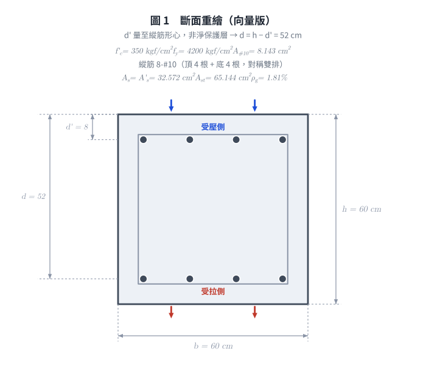
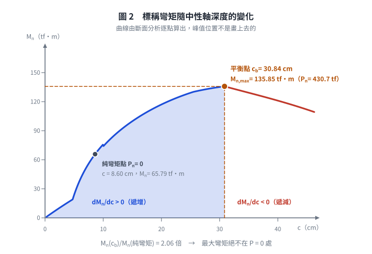
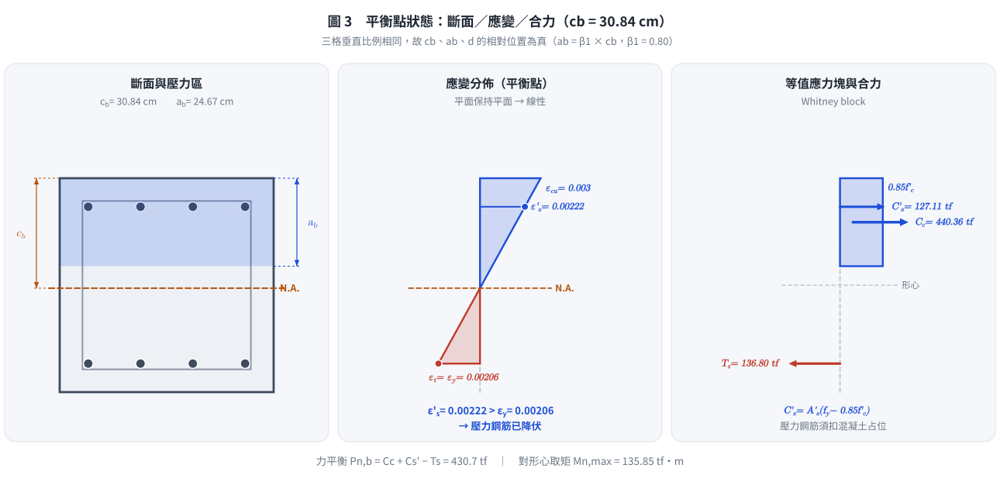
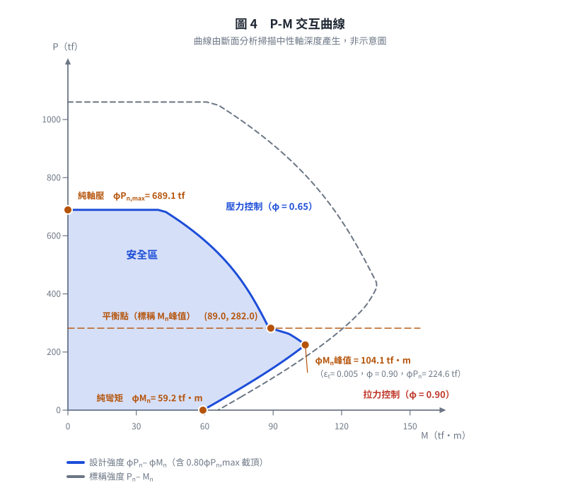

考題編號：RC-2015-1
主分類： RC-U1-2 RC 柱強度分析與設計
副分類： （無）
設計法： USD強度設計法
標籤： 方形柱 P-M互制 平衡點 最大彎矩 對稱配筋 雙排鋼筋 壓力控制過渡區 拉力控制界限 設計強度峰值
1. 原始題目重述（Problem Restatement）
RC 方形柱斷面，資料如下：
| 項目 | 數值 |
|---|---|
| 斷面尺寸 $b = h$ | 60 cm × 60 cm |
| 鋼筋保護層深度 $d'$ | 8 cm（至縱筋形心） |
| 有效深度 $d$ | $60 - 8 = 52$ cm |
| 縱向鋼筋 $A_{st}$ | $8\text{-\#10}$（頂 4 根 + 底 4 根） |
| 混凝土強度 $f'_c$ | 350 kgf/cm² |
| 鋼筋降伏強度 $f_y$ | 4200 kgf/cm² |
#10 鋼筋斷面積 = 8.143 cm²；頂排 $A'_s$ = 底排 $A_s$ = $4 \times 8.143 = 32.572$ cm²
考卷原始附圖：

圖 1a 考卷原圖（截圖）。正方形斷面 60 cm × 60 cm，縱筋 Ast=8-#10，頂部 4 根距頂面 8 cm，底部 4 根距底面 8 cm，矩形閉合箍筋。
向量重繪：

圖 1b 斷面重繪（向量版）。$d' = 8$ cm 量到縱筋形心而非淨保護層，圖上把量測起訖畫死，可攔下把 $d$ 誤算成 $60 - 8 - d_b - d_{tie}$ 的錯誤。
試求： 在適當調整軸壓載重後，此柱斷面可承受之最大極限彎矩載重。（20 分）
2. 考題核心精神與出題者意圖（Core Concepts & Examiner's Intent）
核心觀念： P-M 互制圖上，柱斷面的彎矩承載力並非在純彎矩（$P_u = 0$）處最大，而是在某一特定軸力下達到極值。但「極值在哪裡」要看談的是標稱還是設計強度，兩者不在同一點：
| 曲線 | 峰值位置 | 峰值 |
|---|---|---|
| 標稱 $M_n$ | 平衡點 $c = c_b = 30.84$ cm（$\varepsilon_t = \varepsilon_y$） | 135.85 tf·m |
| 設計 $\varphi M_n$ | 拉力控制界限 $c = 19.50$ cm（$\varepsilon_t = 0.005$） | 104.08 tf·m |
題目問的是「可承受之最大極限彎矩載重」——極限（factored）載重必須滿足 $M_u \leq \varphi M_n$，故所求為設計強度的極大值 $(\varphi M_n)_{\max} = 104.1$ tf·m（見 §4 Step 8–10）。平衡點的 135.85 tf·m 是標稱值，不是斷面可承受的極限載重；乘上 $\varphi$ 後只有 88.3 tf·m，反而比 104.1 小。
出題者意圖：
- 測驗考生能否從 P-M 互制圖的幾何分析，辨認彎矩極值不在純彎矩點
- 驗算平衡條件（應變圖＋力平衡＋力矩平衡）的完整計算流程
- 確認 φ 值判斷（過渡區線性內插），並看出 $\varphi$ 的變化足以把設計曲線的峰值推離平衡點
- 分辨「標稱強度」與「極限（設計）載重」兩個層次——這是本題最容易失分之處
3. 解題戰略地圖與陷阱分析（Strategic Roadmap & Trap Analysis）
核心推論一：標稱彎矩 $M_n$ 的峰值在平衡點
對此對稱斷面，當 $c \leq c_b$（拉力鋼筋降伏區）時：
$$\frac{dM_n}{dc} = 428{,}400 - 11{,}424c > 0 \text{（c ≤ 30.84 時）}$$
故彎矩在此區間隨 c 增大而持續增加，至 $c = c_b$ 達到最大值。
當 $c > c_b$（底部鋼筋未降伏）時，$dM_n/dc < 0$，彎矩開始下降。
→ 標稱最大彎矩在平衡點，此時 $c = c_b$。
核心推論二：設計彎矩 $\varphi M_n$ 的峰值不在平衡點
題目要的是「極限彎矩載重」，即 $M_u \leq \varphi M_n$ 的上限，故真正要極大化的是乘積 $\varphi(\varepsilon_t) \cdot M_n(c)$。兩個因子的走向相反：
$$c \downarrow \;\Rightarrow\; \varepsilon_t \uparrow \;\Rightarrow\; \varphi \uparrow \quad\text{（0.65 → 0.90，升幅 38\%）}$$
$$c \downarrow \;\Rightarrow\; M_n \downarrow \quad\text{（135.85 → 115.65 tf·m，降幅 15\%）}$$
在過渡區內 $\varphi$ 的升幅大於 $M_n$ 的降幅，故 $\varphi M_n$ 隨 $c$ 減小而持續上升；一旦越過 $\varepsilon_t = 0.005$，$\varphi$ 觸頂鎖定 0.90 不再上升，而 $M_n$ 仍繼續下降，$\varphi M_n$ 隨即轉為下降。
→ $\varphi M_n$ 的峰值恰在過渡區與拉力控制區的分界，即 $\varepsilon_t = 0.005$、$c = 19.50$ cm（此為折點極值，不是導數為零的平滑極值，故不能用微分求，要用分段判斷）。

圖 2 $M_n$ 隨 $c$ 的變化，兩段斜率異號、在 $c = c_b$ 形成尖點。純彎矩點只有峰值的 48%，可攔下「最大彎矩在 $P_n = 0$ 處」這個直覺錯誤（陷阱①）。
作戰計畫（兩階段、六步驟）：
【階段一】標稱強度基準——平衡點
Step 1 確認斷面與材料參數（β₁、As、As'、Ast、εy）
↓
Step 2 計算平衡中性軸 cb 及應力塊深度 ab
↓
Step 3 驗算頂底鋼筋是否均降伏（應變相容）
↓
Step 4-7 三力 → 力平衡 Pn,b → 力矩平衡 Mn,max
→ φ=0.650 → φMn = 88.3 tf·m（標稱峰值的設計值）
【階段二】極限彎矩載重——拉力控制界限 ★本題答案
Step 8 判斷 φMn 的峰值位置：φ 升幅 > Mn 降幅
→ 峰值在 εt = 0.005 的折點
↓
Step 9 取 εt = 0.005 → c = 19.50、a = 15.60
→ 壓力鋼筋「未降伏」須用 f's = Es·ε's
→ 三力 → Pn、Mn → φ = 0.90
→ (φMn)max = 104.1 tf·m ← 答案
↓
Step 10 掃描 c 驗證 19.50 cm 確為極大值（單峰）
五個關鍵陷阱：
| # | 陷阱 | 正確做法 |
|---|---|---|
| ① | 認為最大彎矩在純彎矩（P=0）點 | 彎矩極值在有軸壓處，純彎矩只有峰值的 48% |
| ② | β₁ 忘記調整（f'c > 280 kgf/cm²） | β₁ = 0.85 − 0.05×(350−280)/70 = 0.80 |
| ③ | 壓力鋼筋力未扣除混凝土占位：Cs'=As'×f's | 正確：$C'_s = A'_s(f'_s − 0.85f'_c)$（僅當 $a > d'$） |
| ④ | φ 值分區判錯 | 平衡點 $\varepsilon_t = \varepsilon_{ty}$ 恰在壓力控制界限上，$\varphi = 0.65$（不是過渡區內插值）；$\varepsilon_t = 0.005$ 才是 0.90 |
| ⑤ | 把「φ × 標稱峰值」當成最大極限彎矩 | 兩條曲線峰值不同點：$\max(\varphi M_n) = 104.1 \neq \varphi \cdot \max(M_n) = 88.3$ |
3.5 變數層次分析（Variable Hierarchy Analysis）
複習提示：第一次解題後，在每個卡住的知識點旁標記
⚠；第二次複習時只看有⚠的項目。
最終目標
求對稱雙排鋼筋方形柱在「適當調整軸壓」後可承受的最大極限彎矩載重，即設計曲線上的 $\max(\varphi M_n)$ 及對應之 $\varphi P_n$。（平衡點的標稱 $M_{n,\max}$ 是必經的中間量，不是最終答案。）
本題關鍵公式（依計算順序）
$$\text{Step 1:}\quad \beta_1 = 0.85 - 0.05\,\frac{f'_c - 280}{70},\quad A_s = A'_s = 4 \times A_{\#10}$$
$$\text{Step 2:}\quad c_b = \frac{6120}{6120 + f_y}\,d,\quad a_b = \beta_1 \cdot \boxed{c_b}$$
$$\text{Step 3:}\quad \varepsilon'_s = 0.003\,\frac{\boxed{c_b} - d'}{\boxed{c_b}} \overset{?}{\geq} \varepsilon_y$$
$$\text{Step 4:}\quad C_c = 0.85\,f'_c\,\boxed{a_b}\,b,\quad C'_s = A'_s\,(f'_s - 0.85f'_c),\quad T_s = A_s\,f_y$$
$$\text{Step 5:}\quad P_{n,b} = \boxed{C_c} + \boxed{C'_s} - \boxed{T_s}$$
$$\text{Step 6:}\quad M_{n,\max} = \boxed{C_c}\!\left(\tfrac{h}{2}-\tfrac{\boxed{a_b}}{2}\right) + \boxed{C'_s}\!\left(\tfrac{h}{2}-d'\right) + \boxed{T_s}\!\left(d-\tfrac{h}{2}\right)$$
$$\text{Step 7:}\quad \varphi = 0.65 + 0.25\,\frac{\varepsilon_t - \varepsilon_{ty}}{0.005 - \varepsilon_{ty}},\quad \varepsilon_{ty} = \frac{f_y}{E_s}$$
$$\text{Step 8:}\quad \max_c\;\varphi(\varepsilon_t)\cdot M_n(c)\;\Rightarrow\;\text{峰值在 }\varepsilon_t = 0.005\text{（}\varphi\text{ 觸頂的折點）}$$
$$\text{Step 9:}\quad c_{tc} = \frac{0.003}{0.003+0.005}\,d,\quad f'_s = E_s\,\varepsilon'_s < f_y\ \text{（未降伏）},\quad (\varphi M_n)_{\max} = 0.90\,M_n(\boxed{c_{tc}})$$
L1：題目直接給定
| 符號 | 數值 | 說明 |
|---|---|---|
| $b = h$ | 60 cm | 方形斷面邊長 |
| $d'$ | 8 cm | 至壓力鋼筋形心 |
| $d$ | 52 cm | 有效深度（60−8） |
| $f'_c$ | 350 kgf/cm² | 混凝土強度 |
| $f_y$ | 4200 kgf/cm² | 鋼筋降伏強度 |
| 配筋 | 8-#10（頂 4 + 底 4） | 對稱雙排 |
L2：需知識點推導
▎材料參數
| 符號 | 公式／來源 | 卡關? |
|---|---|---|
| $A_{\#10}$ | 8.143 cm²（鋼筋表） | |
| $A_s = A'_s$ | $4 \times 8.143 = 32.572$ cm² | |
| $\varepsilon_y$ | $f_y/E_s = 4200/2{,}040{,}000 = 0.00206$ | |
| $\beta_1$ | $0.85 - 0.05\times(350-280)/70 = 0.80$ |
▎平衡條件
| 符號 | 公式／來源 | 卡關? |
|---|---|---|
| $c_b$ | $6120/(6120+4200)\times 52 = 30.84$ cm | |
| $a_b$ | $0.80 \times 30.84 = 24.67$ cm | |
| $\varepsilon'_s$ | $0.003\times(30.84-8)/30.84 = 0.00222 > \varepsilon_y$ → 壓力鋼筋降伏 |
▎力學計算
| 符號 | 公式／來源 | 卡關? |
|---|---|---|
| $C_c$ | $0.85\times350\times24.67\times60$ | |
| $C'_s$ | $32.572\times(4200-0.85\times350)$ | |
| $T_s$ | $32.572\times4200$ | |
| $P_{n,b}$ | $C_c + C'_s - T_s$ | |
| $M_{n,\max}$ | 力矩平衡（對斷面形心） |
▎φ 值與設計強度
| 符號 | 公式／來源 | 卡關? |
|---|---|---|
| $\varepsilon_t$ | = $\varepsilon_{ty} = 0.00206$（平衡點，恰在壓力控制界限） | |
| $\varphi$ | $\varepsilon_t = \varepsilon_{ty}$ → $\varphi = 0.65$（過渡區的下端點，無需內插） | |
| $\varphi M_n(c_b)$ | $0.65 \times 135.85 = 88.3$ tf·m（不是本題答案） |
▎拉力控制界限＝本題答案（Step 8–10）
| 符號 | 公式／來源 | 卡關? |
|---|---|---|
| $c_{tc}$ | $\dfrac{0.003}{0.003+0.005}\times 52 = 19.50$ cm | |
| $a_{tc}$ | $0.80\times19.50 = 15.60$ cm（$> d' = 8$，仍須扣占位） | |
| $\varepsilon'_s$ | $0.003\times(19.50-8)/19.50 = 0.001769 < \varepsilon_y$ → 壓力鋼筋未降伏 | |
| $f'_s$ | $2{,}040{,}000\times0.001769 = 3{,}609$ kgf/cm² | |
| $\varphi$ | $\varepsilon_t = 0.005$ → $\varphi = 0.90$（拉力控制界限） | |
| $(\varphi M_n)_{\max}$ | $0.90\times115.65 = \mathbf{104.1}$ tf·m |
L3：深層知識（不懂就卡住）
| 知識點 | 說明 | 卡關? |
|---|---|---|
| 標稱峰值在平衡點 | 對對稱雙排鋼筋柱，標稱 M_n 的峰值發生在平衡點（c=cb），非純彎矩點 | |
| 設計峰值在拉力控制界限 | 「極限彎矩載重」比的是 φM_n；φ 在過渡區的升幅（38%）大於 M_n 的降幅（15%），峰值被推到 εt=0.005 的折點 | |
| 壓力鋼筋需扣混凝土占位 | 壓力區鋼筋計入 Cs 時，淨力 = As'(f's − 0.85f'c)，避免重複計入混凝土壓力；僅當 a > d' 才扣 | |
| 壓力鋼筋不一定降伏 | c 變小則 ε's 變小；c=19.50 時 ε's=0.001769 < εy，必須用 f's = Es·ε's，不可直接代 fy | |
| β₁ 隨 f'c 縮減 | f'c > 280 時，β₁ = 0.85 − 0.05(f'c−280)/70，最小為 0.65 | |
| 平衡點的 φ 值 | εt = εy ≈ 0.00206 > 0.002，進入過渡區，φ略大於0.65但接近壓力控制值 |
4. 步驟化詳細計算過程（Step-by-Step Detailed Calculation）
階段一（Step 1–7） 先算平衡點，取得標稱峰值 $M_{n,\max}$ 與過渡區 $\varphi$ 的基準；
階段二（Step 8–10） 才是本題所問的「最大極限彎矩載重」$(\varphi M_n)_{\max}$。
【階段一】平衡點——標稱彎矩的峰值
Step 1：斷面參數確認
$$A_{\#10} = 8.143 \text{ cm}^2$$
$$A_s = A'_s = 4 \times 8.143 = 32.572 \text{ cm}^2,\quad A_{st} = 8 \times 8.143 = 65.144 \text{ cm}^2$$
$$A_g = 60 \times 60 = 3{,}600 \text{ cm}^2,\quad \rho_g = \frac{65.144}{3{,}600} = 1.81\% \quad (\text{介於 1\%∼8\%，合規})$$
$$\beta_1 = 0.85 - 0.05 \times \frac{350 - 280}{70} = 0.85 - 0.05 = \boxed{0.80}$$
$$\varepsilon_y = \frac{f_y}{E_s} = \frac{4200}{2{,}040{,}000} = 0.00206$$
Step 2：平衡中性軸與應力塊深度
策略： 標稱最大彎矩在平衡點（拉力鋼筋剛好降伏），由應變相容決定 cb。
$$c_b = \frac{6120}{6120 + f_y} \cdot d = \frac{6120}{6120 + 4200} \times 52 = \frac{6120}{10{,}320} \times 52 = \boxed{30.84 \text{ cm}}$$
$$a_b = \beta_1 \cdot c_b = 0.80 \times 30.84 = \boxed{24.67 \text{ cm}}$$
Step 3：驗算壓力鋼筋是否降伏
$$\varepsilon'_s = 0.003 \times \frac{c_b - d'}{c_b} = 0.003 \times \frac{30.84 - 8}{30.84} = 0.003 \times \frac{22.84}{30.84} = 0.00222$$
$$0.00222 > \varepsilon_y = 0.00206 \quad \Rightarrow \quad \boxed{f'_s = f_y = 4{,}200 \text{ kgf/cm}^2 \text{（壓力鋼筋降伏）}}$$
Step 4：三力計算
混凝土壓力合力：
$$C_c = 0.85 \times f'_c \times a_b \times b = 0.85 \times 350 \times 24.67 \times 60 = 440{,}362 \text{ kgf} = 440.36 \text{ tf}$$
壓力鋼筋淨力（扣除混凝土占位）：
$$C'_s = A'_s \times (f'_s - 0.85 f'_c) = 32.572 \times (4{,}200 - 0.85 \times 350) = 32.572 \times 3{,}902.5 = 127{,}112 \text{ kgf} = 127.11 \text{ tf}$$
拉力鋼筋張力（降伏）：
$$T_s = A_s \times f_y = 32.572 \times 4{,}200 = 136{,}802 \text{ kgf} = 136.80 \text{ tf}$$

圖 3 平衡點的斷面／應變／合力。三格垂直比例共用，$a_b = 24.67 < c_b = 30.84$ 的相對關係是真的，可攔下把 $c$ 直接當成應力塊深度、以及 $C'_s$ 漏扣混凝土占位（陷阱②③）。
Step 5：軸力平衡（Pn,b）
$$P_{n,b} = C_c + C'_s - T_s = 440{,}362 + 127{,}112 - 136{,}802 = \boxed{430{,}672 \text{ kgf} \approx 430.7 \text{ tf}}$$
Step 6：力矩平衡（Mn,max，對斷面形心 h/2 = 30 cm）
$$M_{n,\max} = C_c \left(\frac{h}{2} - \frac{a_b}{2}\right) + C'_s \left(\frac{h}{2} - d'\right) + T_s \left(d - \frac{h}{2}\right)$$
$$= 440{,}362 \times (30 - 12.335) + 127{,}112 \times (30 - 8) + 136{,}802 \times (52 - 30)$$
$$= 440{,}362 \times 17.665 + 127{,}112 \times 22 + 136{,}802 \times 22$$
$$= 7{,}778{,}995 + 2{,}796{,}464 + 3{,}009{,}644$$
$$= 13{,}585{,}103 \text{ kgf·cm} = \boxed{135.85 \text{ tf·m（標稱最大彎矩）}}$$
Step 7：φ 值與設計強度
平衡點時 $\varepsilon_t = \varepsilon_{ty} = f_y/E_s = 0.00206$，恰好落在壓力控制界限上（依 wiki/code-ref/ACI-318.md §21.2.2：壓力控制為 $\varepsilon_t \leq \varepsilon_{ty}$，過渡區為 $\varepsilon_{ty} < \varepsilon_t < 0.005$）：
$$\varphi = 0.65 + 0.25\,\frac{\varepsilon_t - \varepsilon_{ty}}{0.005 - \varepsilon_{ty}} = 0.65 + 0.25 \times \frac{0}{0.00294} = \boxed{0.650}$$
舊版規範（以 0.002 為壓力控制界限）在此會得 0.655。本庫一律採上式現行版本，
差異只影響平衡點附近的第三位數，不影響本題答案。
設計強度：
$$\varphi P_{n,b} = 0.650 \times 430.7 = \boxed{279.9 \text{ tf}}$$
$$\varphi M_n(c_b) = 0.650 \times 135.85 = \boxed{88.30 \approx 88.3 \text{ tf·m}}$$
⚠ 注意：88.3 tf·m 還不是答案。 它只是「標稱峰值那一點」的設計強度。
斷面在別的軸力下可以有更大的設計彎矩——見 Step 8。
【階段二】拉力控制界限——極限彎矩載重的峰值
Step 8：$\varphi M_n$ 的峰值落在哪裡？
題目問「可承受之最大極限彎矩載重」。極限（factored）載重的驗證式為
$$M_u \leq \varphi M_n \quad\Rightarrow\quad M_{u,\max} = \max_{c}\;\big[\varphi(\varepsilon_t)\cdot M_n(c)\big]$$
要極大化的是乘積，而非 $M_n$ 單獨一項。兩個因子隨 $c$ 的走向相反：
| 區間 | $\varepsilon_t$ | $\varphi$ | $M_n$ | 乘積 $\varphi M_n$ |
|---|---|---|---|---|
| $c > 19.50$（過渡區） | $\varepsilon_{ty} \sim 0.005$ | 隨 $c\downarrow$ 上升 0.650→0.90 | 隨 $c\downarrow$ 下降 | $\varphi$ 升幅 38% > $M_n$ 降幅 15% → 上升 |
| $c < 19.50$（拉力控制區） | $> 0.005$ | 鎖定 0.90，不再上升 | 繼續下降 | → 下降 |
$\varphi$ 在 $\varepsilon_t = 0.005$ 觸頂後被截平，乘積因此在該處形成折點極大值（非平滑極值，微分為零的條件在此不適用，須用分段判斷）。
$$\therefore\ \varphi M_n \text{ 的峰值發生在 } \varepsilon_t = 0.005 \text{（拉力控制界限）}$$
Step 9：拉力控制界限的完整計算 ★
9-1 中性軸與應力塊深度
由應變相容（$\varepsilon_{cu} = 0.003$，$\varepsilon_t = 0.005$）：
$$c_{tc} = \frac{0.003}{0.003 + 0.005} \cdot d = \frac{0.003}{0.008} \times 52 = 0.375 \times 52 = \boxed{19.50 \text{ cm}}$$
$$a_{tc} = \beta_1 \cdot c_{tc} = 0.80 \times 19.50 = \boxed{15.60 \text{ cm}}$$
$$a_{tc} = 15.60 > d' = 8 \text{ cm} \quad\Rightarrow\quad \text{壓力鋼筋仍在等值應力塊內，}C'_s \text{ 須扣混凝土占位}$$
9-2 壓力鋼筋應變與應力（與平衡點不同，此處未降伏）
$$\varepsilon'_s = 0.003 \times \frac{c_{tc} - d'}{c_{tc}} = 0.003 \times \frac{19.50 - 8}{19.50} = 0.003 \times \frac{11.50}{19.50} = 0.001769$$
$$0.001769 < \varepsilon_y = 0.00206 \quad\Rightarrow\quad \boxed{f'_s = E_s\,\varepsilon'_s = 2{,}040{,}000 \times 0.001769 = 3{,}609 \text{ kgf/cm}^2 \text{（未降伏）}}$$
這是本步驟最容易錯的地方：$c$ 由 30.84 縮到 19.50，壓力鋼筋離中性軸更近、應變更小，
不能沿用 Step 3 的 $f'_s = f_y$。
9-3 三力計算
$$C_c = 0.85 f'_c\,a_{tc}\,b = 0.85 \times 350 \times 15.60 \times 60 = 278{,}460 \text{ kgf} = 278.46 \text{ tf}$$
$$C'_s = A'_s (f'_s - 0.85 f'_c) = 32.572 \times (3{,}609 - 297.5) = 32.572 \times 3{,}311.5 = 107{,}870 \text{ kgf} = 107.87 \text{ tf}$$
$$T_s = A_s f_y = 32.572 \times 4{,}200 = 136{,}802 \text{ kgf} = 136.80 \text{ tf}\quad(\varepsilon_t = 0.005 > \varepsilon_y\ \text{已降伏})$$
9-4 軸力平衡——「適當調整」後的軸壓
$$P_n = C_c + C'_s - T_s = 278{,}460 + 107{,}870 - 136{,}802 = \boxed{249{,}528 \text{ kgf} = 249.53 \text{ tf}}$$
9-5 力矩平衡（對斷面形心 $h/2 = 30$ cm）
$$M_n = C_c\left(\frac{h}{2} - \frac{a_{tc}}{2}\right) + C'_s\left(\frac{h}{2} - d'\right) + T_s\left(d - \frac{h}{2}\right)$$
$$= 278{,}460 \times (30 - 7.80) + 107{,}870 \times (30 - 8) + 136{,}802 \times (52 - 30)$$
$$= 278{,}460 \times 22.20 + 107{,}870 \times 22 + 136{,}802 \times 22$$
$$= 6{,}181{,}812 + 2{,}373{,}140 + 3{,}009{,}644$$
$$= 11{,}564{,}596 \text{ kgf·cm} = \boxed{115.65 \text{ tf·m}}$$
9-6 強度折減係數與設計強度
$$\varepsilon_t = 0.005 \quad\Rightarrow\quad \boxed{\varphi = 0.90}\ \text{（拉力控制界限，過渡區上端）}$$
$$\varphi P_n = 0.90 \times 249.53 = \boxed{224.6 \text{ tf}} \quad\text{（對應的軸壓載重）}$$
$$(\varphi M_n)_{\max} = 0.90 \times 115.65 = \boxed{104.08 \approx 104.1 \text{ tf·m}} \quad\Longleftarrow\ \textbf{本題答案}$$
Step 10：驗證 $c = 19.50$ cm 確為極大值
沿 $c$ 掃描（同一組公式，只換中性軸深度）：
| $c$ (cm) | $\varepsilon_t$ | $\varphi$ | $M_n$ (tf·m) | $\varphi M_n$ (tf·m) | 趨勢 |
|---|---|---|---|---|---|
| 15.00 | 0.00740 | 0.900 | 99.84 | 89.85 | ↑ |
| 17.00 | 0.00618 | 0.900 | 107.50 | 96.75 | ↑ |
| 19.50 | 0.00500 | 0.900 | 115.65 | 104.08 | ★ 峰值 |
| 21.00 | 0.00443 | 0.851 | 119.89 | 102.08 | ↓ |
| 23.00 | 0.00378 | 0.797 | 124.88 | 99.47 | ↓ |
| 26.00 | 0.00300 | 0.730 | 130.83 | 95.51 | ↓ |
| 28.00 | 0.00257 | 0.694 | 133.23 | 92.41 | ↓ |
| 30.84（平衡點） | 0.00206 | 0.650 | 135.85 | 88.30 | ↓ |
單峰、峰值在 $c = 19.50$ cm，$(\varphi M_n)_{\max} = 104.08$ tf·m。注意最右兩欄的方向相反——$M_n$ 一路遞增到平衡點，$\varphi M_n$ 卻一路遞減，這正是陷阱⑤的量化證據。
計算結果彙整
| 狀態 | $c$ (cm) | $a$ (cm) | $f'_s$ (kgf/cm²) | $P_n$ (tf) | $M_n$ (tf·m) | $\varphi$ | $\varphi P_n$ (tf) | $\varphi M_n$ (tf·m) |
|---|---|---|---|---|---|---|---|---|
| 平衡點（標稱峰值） | 30.84 | 24.67 | 4,200（降伏） | 430.7 | 135.85 | 0.650 | 279.9 | 88.3 |
| 拉力控制界限（設計峰值） | 19.50 | 15.60 | 3,609（未降伏） | 249.53 | 115.65 | 0.90 | 224.6 | 104.1 |
| 純彎矩點（參考） | 8.60 | 6.88 | 428（未降伏，不扣占位） | 0 | 65.79 | 0.90 | 0 | 59.2 |
答案
此柱斷面可承受之最大極限彎矩載重：
$$\boxed{M_{u,\max} = (\varphi M_n)_{\max} = 104.1 \text{ tf·m}}$$
發生於 $c = 19.50$ cm（$\varepsilon_t = 0.005$，拉力控制界限），
此時「適當調整」後的軸壓載重為 $P_u = \varphi P_n = 224.6$ tf。
若題意問的是標稱最大彎矩，則答案為平衡點的 $M_{n,\max} = 135.85$ tf·m（$P_{n,b} = 430.7$ tf）。
作答時建議兩者並陳，並指明「極限載重」對應的是前者。
5. 關鍵爭議點與進階探討（Critical Issues & Advanced Discussion）
爭議：為何標稱最大彎矩在平衡點而非純彎矩點？
對對稱雙排配筋柱，可用微積分分析標稱彎矩對 c 的導數：
- 在兩鋼筋均降伏的區間（$c'_{y} \leq c \leq c_b$），$dM_n/dc = 428{,}400 - 11{,}424c > 0$（遞增）
- 在底筋未降伏的區間（$c > c_b$），$dM_n/dc < 0$（遞減）
因此標稱最大彎矩在兩區間的分界點 $c = c_b$，即平衡點（見圖 2）。乘上 $\varphi$ 之後峰值會移位，見下方「$\varphi M_n$ 的峰值不在平衡點」。
進階：純軸壓強度上限確認
$$\varphi P_{n,\max} = 0.65 \times 0.80 \times [0.85 \times 350 \times (3{,}600-65.144) + 4{,}200 \times 65.144]$$
$$= 0.52 \times [297.5 \times 3{,}534.86 + 273{,}605] = 0.52 \times [1{,}051{,}621 + 273{,}605] = 689{,}117 \text{ kgf} = 689.1 \text{ tf}$$
設計 P-M 互制圖四個關鍵點（$\varphi P_n$, $\varphi M_n$）：純軸壓（689.1, 0）→ 平衡點（279.9, 88.3）→ 設計彎矩峰值（224.6, 104.1） → 純彎矩（0, 59.2）。曲線在平衡點以下仍向右外凸到 104.1，這就是「最大極限彎矩載重」的位置。
進階：純彎矩點（補算）
令 $P_n = 0$ 反解中性軸得 $c = 8.60$ cm。此時 $a = \beta_1 c = 6.88 < d' = 8$，壓力鋼筋落在等值應力塊之外，故不扣混凝土占位，且遠未降伏：
$$\varepsilon'_s = 0.003 \times \frac{8.60-8}{8.60} = 0.000210 \;\Rightarrow\; f'_s = 2{,}040{,}000 \times 0.000210 = 428 \text{ kgf/cm}^2$$
（原稿此處誤記為 605 kgf/cm²，已於 2026-08-21 更正；$M_n$ 與 $\varphi M_n$ 不受影響。）
$$M_n = 65.79 \text{ tf·m},\quad \varepsilon_t = 0.0151 > 0.005 \Rightarrow \varphi = 0.90,\quad \varphi M_n = 59.21 \text{ tf·m}$$
$M_n(c_b) / M_n(\text{純彎矩}) = 2.06$ 倍——這個比值把「最大彎矩絕不在 $P_n = 0$ 處」量化了。
進階：$\varphi M_n$ 的峰值不在平衡點——為何 $\varphi$ 贏得過 $M_n$
完整計算已在 §4 Step 8–10；此處補上「為何一定會贏」的一般性論證。
在過渡區內，兩個因子相對於平衡點的變化率為：
$$\frac{\varphi(0.005)}{\varphi(\varepsilon_{ty})} = \frac{0.90}{0.650} = 1.385 \quad\text{（+38.5\%）}$$
$$\frac{M_n(c_{tc})}{M_n(c_b)} = \frac{115.65}{135.85} = 0.851 \quad\text{（−14.9\%）}$$
$$\Rightarrow\quad \frac{\varphi M_n(c_{tc})}{\varphi M_n(c_b)} = 1.385 \times 0.851 = 1.179 \quad\text{（+17.9\%）}$$
$\varphi$ 的升幅之所以壓過 $M_n$ 的降幅，原因是兩者的「行程」不對等：規範規定 $\varphi$ 必須在整個過渡區內走完 0.65 → 0.90 的全程（相對自身 +38%），這是法規強制的固定幅度，與斷面尺寸無關；而 $M_n$ 在同一段 $c$ 區間只是從峰值緩緩退下（本題 −15%），退幅取決於斷面幾何，通常遠小於 38%。只要斷面的 $\varepsilon_y$ 落在壓力控制界限附近（$f_y = 4{,}200$ 的常見情形），這個不等式幾乎必然成立——這不是本題的特例，而是 USD 設計柱的通則。
因此「柱的最大彎矩在平衡點」這句口訣只對標稱值成立。碰到題目問「極限／設計彎矩」時，一律要往拉力控制界限算。
反向檢核： 若某斷面的 $\varphi$ 在平衡點已接近 0.90（例如低 $f_y$、$\varepsilon_y$ 很小的斷面），$\varphi$ 的可升空間縮小，兩個峰值就會靠攏甚至重合。判斷時仍應實算，勿把「峰值必在 $\varepsilon_t=0.005$」也背成新的口訣。

圖 4 設計曲線（實線）與標稱曲線（虛線）。平衡點只是標稱 $M_n$ 的峰值，設計曲線在其下方另有一段外凸，$\varphi M_n$ 峰值落在 $\varepsilon_t = 0.005$ 處，可攔下把「$\varphi \times$ 標稱峰值」當成最大設計彎矩的錯誤。
圖解補繪：2026-08-20（向量圖，腳本 figs/gen_RC-2015-1.py，可重跑）
圖 4 重繪：2026-08-21（改用現行 φ 公式後，平衡點由 (89.0, 282.1) 移為 (88.3, 279.9)；φMn 峰值 104.1 不變）
修訂：2026-08-21 補上「最大極限彎矩載重 = 104.1 tf·m」的完整計算過程（新增 §4 Step 8–10、§4 答案區、陷阱⑤、§3.5 對應層次），並將主線答案由平衡點的 89.0 tf·m 改為設計曲線峰值 104.1 tf·m；平衡點計算保留為中間對照。所有數值由 §4 Step 10 的掃描表複核，可重算。